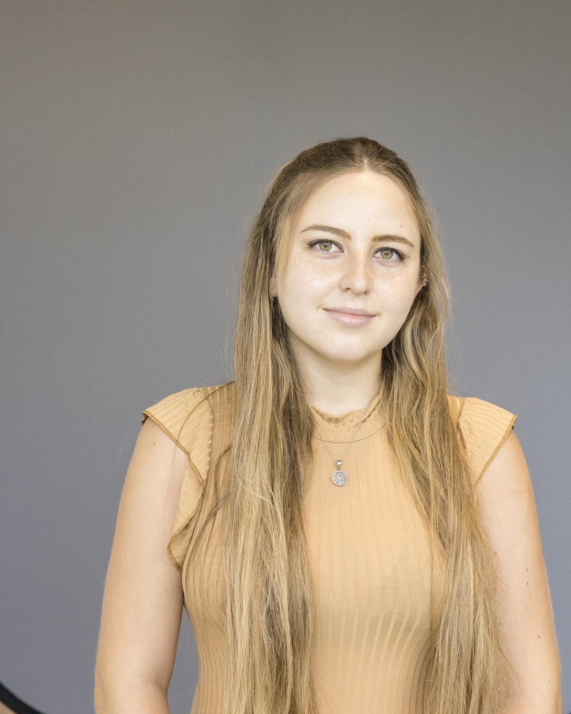

Goals for this Website
- Present my CV for future employers
- Present and organize previous work in portfolio style
- Facilitate collaboration among other students
- Practice Data Science and Coding skills.
Education
College
- Macalester College, St. Paul MN. U.S
- GPA: 3.94
- Bachelor of Arts Expected May 2022
Majors:
International Studies and Political Science.
Minor:
Data Science: Political Analytics
Concentrations:
Human Rights and Humanitarianism and International Development.
Honors:
Theodore Mitau Grant Recipient Summer 2021. Kofi Annan scholarship awarded for history of academic and personal excellence. Davis Scholarship awarded to successful graduates from United World College to perpetuate the diversity mission in institutions for higher education. Dean’s list Fall 2018, Spring 2019, Fall 2019. Spring 2020, Fall 2020.
Coursework:
Intl. Codes of Conduct, Intro to Data Science, Empirical Research Methods, Statistical Modelling, Political Economy of Development, Core Concepts of Computer Science.
Highschool
- United World College, Changshu China
- International Baccalaureate (IB) Bilingual Diploma completed June 2018
- Scholarship granted by the Argentine National Committee to attend UWC for 2 years along with peers from 100+ countries.
Relevant Experiences:
Preceptor, Macalester College. June 2021-Present.
Precept First-year course Latin America Through Women’s Eyes.
- Review and update the historic syllabus to adapt to new events, perspectives and needs form the 2021 cohort.
- Consolidate the logistics and preparations for guest speakers, group events and daily class sessions.
- Support students individually during office hours to aid in writing process, adaptation and general concerns.
Research Assistant, University of Michigan. Remote. June 2021-August 2021.
Research on Cognitive Psychology and Effects of the Pandemic on Education.
- Investigate and review articles and academic sources relevant to the topic.
- Condense meaningful concepts and ideas from academic sources and translate it into 1Cademy platform.
- Present finding in a compelling and engaging way with the team during weekly meetings.
Research Assistant, Minneapolis MN. U.S January 2019-December 2020.
Research on African Party Activism for Professor Mueller’s book.
- Organize and translate large literature review into original research project.
- Review legal documentation and create a data base for further analysis.
- Compile bi-weekly briefs on research progress for Professor Mueller.
The Advocates for Human Rights, Minneapolis MN. U.S. December 2019-January 2020.
Intern at the Refugee and Immigration Program.
- Answer the client phone hotline, provide referrals and communicate with current clients.
- Conduct phone intakes for potential asylum clients and post intake interviews.
- Write case summaries, and research on legal and human rights conditions on countries for evidence.
Qatar Foundation World Innovation Summit for Education, Doha, Qatar. November 2019
Fellow of Learner’s Voice Program.
- The WISE Learners’ Voice Program brings the views of students to the issue of rethinking education and prepares them to take on leading roles in their fields and in the world of education participating in the annual WISE Summit in Doha.
International Relations Secretariat of Salta, Argentina. July 2017
Intern and Personal Assistant.
- Staff the Secretariat in important meetings or attended to them on his behalf.
- Plan and schedule agendas for long term projects.
- Organize meetings with NGOs and civil society associations.
Additional Work Experience:
Spanish and Portuguese Department. Macalester College. Fall 2018-Present
Spanish Lab Assistant and Tutor.
- Prepare, teach and grade the weekly lab activities.
- Assist and develop rapport with students to encourage active participation in lab activities.
Residential Life Department. Macalester College
Residence Assistant January 2019 & 2020.
- Conduct rounds on campus, delivering a fast response on critical situations and provide direct communication between the students and the Residence Hall Director.
- Implement community building dynamics focused on the students’ diversity.
Skills:
Languages:
- English and Spanish: Fully fluent.
- French: Excellent level in reading, writing and speaking.
- Mandarin: Basic understanding, mastered 1000 characters.
- Latin: Knowledge sufficient to perform translations and for legal studies.
Computer: Microsoft and Google suite. Photo Shop and Movie Maker. R Studio for Data Science. Python. LaTeX software.